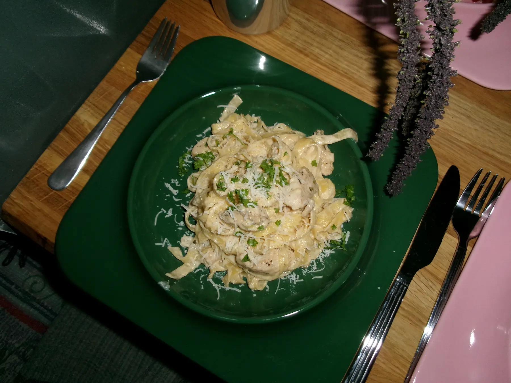

Alfredo

Ingredients
- chicken breasts
- 1/2 tsp. black pepper
- 1 tsp. basil
- 1 tsp. oregano
- 1/2 tsp. smoked paprika
- 1 tsp. garlic powder
- 500g tagliatelle
- 500 ml cream
- 90g parmesan cheese
- 3 tbsp. butter
- 2 shallots, chopped
- 4 tbsp. olive oil
- 1 dl fresh parsley, chopped
- salt
Steps
- Cut the chicken into small pieces, place in a bowl and season with salt
- Add the pepper, basil, oregano, smoked paprika, garlic powder and 2 tbsp. of olive oil and mix it together until spread evenly
- Chop the shallots and grate the parmesan cheese and set both aside into seperate bowls.
- Heat 2 tbsp. of olive oil in a large pan. Cook the chicken on medium heat until cooked through
- Set the chicken aside and in the same pan cook the shallots with the butter until soft.
- Add the cream and then the parmesan cheese.
- When the sauce has thickened and the parmesan has melted, taste and add salt if necessary.
- Keep warm over low heat.
- Boil water in a pot with salt and olive oil.
- Add the pasta and cook until al dente.
- When the pasta is ready add it to the sauce along with the chicken.
- Heat the pan over medium heat until the sauce thickens and everything is mixed well.
- Top with fresh parsley and serve.